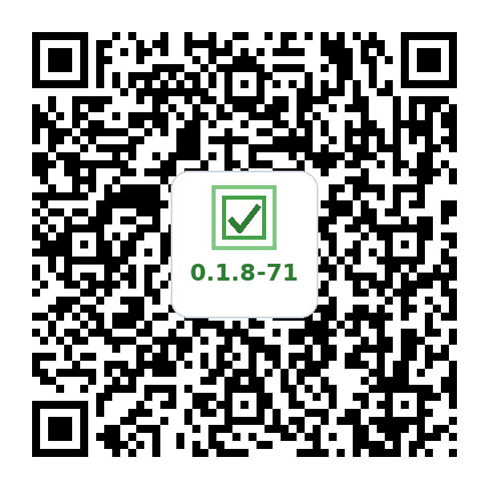

Your task pool is managed directly in a Google Sheet:
- Open the Template: Click MicroTasking Google Sheet Template to open it in your browser.
- Make Your Copy: In Google Sheets, tap File → Make a copy to save an editable copy to your Google Drive.
- Categories = Tabs: Each tab at the bottom represents a category (e.g. Cleaning, Decluttering, Admin). Add, rename, or remove tabs as you wish.
- Tasks & Checkboxes: Add your tasks into the spreadsheet. Use the checkbox in Column A to enable or disable individual tasks. (Category-level toggles can also be managed directly in the app!)
-
Scan or Download: Point your phone's camera at the Stable Release QR code (on the left) below, or tap its download link if you are viewing this page on your phone:
resync-on-launch-and-change

Download MicroTasking APK (v0.1.8-71)
Open the download againWhich one to use: Install from the Stable Release on the left — that is the build you should download and run. The resync-on-launch-and-change development build on the right is an in-progress branch, published for testing only. You are welcome to try it, but it may be unstable, may fail to install or launch, and carries no guarantee that it works at all.
-
Allow Sideloading (First Time Only):
- After tapping Download anyway, open your browser's Downloads list or the Android Files app and tap the downloaded
.apkfile. The browser may not open the installer automatically. - If Android displays "For your security, your phone is not allowed to install unknown apps from this source", tap Settings, toggle Allow from this source to ON, then go back and tap Install.
- If Google Play Protect displays a warning, tap More details → Install anyway.
- After tapping Download anyway, open your browser's Downloads list or the Android Files app and tap the downloaded
- Launch & Grant Permissions: Open MicroTasking from your home screen. When prompted, grant Notifications and Exact Alarms / Display over other apps permissions so full-screen prompt takeovers can wake your screen.
Instead of typing long URLs on your phone keyboard, generate QR codes right here. There are two separate codes — one for your Sheet, one for the Web App URL — and the same two work in both MicroTasking and the ActiveTasks companion app. You scan each one on its own; scanning one never replaces what the other one set.
A. Sheet QR code
In your copied Google Sheet, make sure sharing is set to "Anyone with the link can view" (tap Share → Anyone with the link). Then copy the Sheet URL from your browser bar and paste the whole thing below — #gid= and ?usp= junk and all. It's trimmed down to just the sheet ID before the QR code is made.
B. Web App QR code (optional — only for handing tasks between MicroTasking and ActiveTasks)
This is the address that lets the two apps write back to your Sheet (the → button that refers a task to ActiveTasks, and ActiveTasks' Complete actions). It is not the address of the Apps Script editor tab. Get it by deploying the script from your Sheet, once, on a computer:
- In your Sheet, open Extensions → Apps Script.
- Click Deploy → New deployment (or Manage deployments if you already deployed it).
- Click the gear next to "Select type" and choose Web app. Set Execute as: Me and Who has access: Anyone, then click Deploy (approve the permissions prompt the first time).
- Copy the Web app URL it shows — it starts with
https://script.google.com/macros/s/and ends in/exec— and paste it below.
- Open the MicroTasking app on your Android phone.
- Tap the Settings (gear icon) in the top corner.
- Open the Google Sheet Connection section.
- Tap Scan Sheet QR Code and scan the Sheet QR code from Step 3. MicroTasking will sync your categories and tasks.
- If you made a Web App QR code, tap Scan Web App QR Code and scan that one. It just registers the Web App URL and leaves your tasks as they are.
You're all set! Using ActiveTasks too? Its Settings has the same Google Sheet Connection section — scan the same two codes from Step 3 there; there's no need to generate them again.